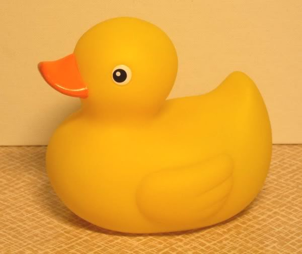

Dzeltenās gumijas pīlītes
Pamatmērķis
Tāda nav! Lapa radīta Latvijas Universitātes Datorikas fakultātes kursa "Tīmekļa tehnoloģijas 1" ietvaros.
Ak, jā! Man nav gumijas pīlītes. :(
Mīļpīlīte
Visjaukākā tomēr ir un paliek parastā pīlīte!
Uci buci
Rubber Ducky, you're the one.
You make bathtime lots of fun.
Rubber Ducky, joy of joys!
When I squeeze you, you make noise!
Rubber Ducky you're so fine,
And I'm lucky that you're mine,
Kas ir gumijas pīlītes
Pīlīšu vēsture
Gumijas pīlīšu vēsture ir saistīta ar gumijas apstrādes rūpnīcas rašanos 19.gadsimta beigās. Pirms tam gumijas pīlītestika ražotas no cietākas gumijas un nebija tik mīkstas, kādas pīlītes ir mūsdienās. Džims Hensons(Jim Henson) gumijas pīlītes popularizēja 1970.gadā, izpildot dziesmas ‘Rubber Duckie’ ( ‘Gumijas pīlīte’ ) un ‘Duckie’. Bez visur atpazīstamās dzeltenās gumijas pīles, ir bijušas ļoti daudzas variācijas par šīm gumijas pīlītēm, piemēram, pīles tēlu ir atveidojuši politiķi, dažādas slavenības. Ir arī tādas pīlītes, kas spīd tumsā, maina krāsu no dzeltenas uz kādu citu, pīlītes izmanto arī, kā interjera dekoru — LED apgaismojums, piepūšamos pīlīšu riņķus. 2001. gadā kāds britu laikraksts ziņoja, ka karalienei Elizabete II vannas istabā atrodas šī dzeltenā gumijas pīle, kas nēsā piepūšamo kroni. Pīlīta bija palikusi plankumaina pēc gadījuma, kad strādnieks veica vannas istabas pārkrāsošanu. Šis stāsts uz neilgu laiku palielināja gumijas pīlīšu pārdošanas reitingu par 80% Lielbritānijā.
Tweet
Atbalstītāji

Validācijas